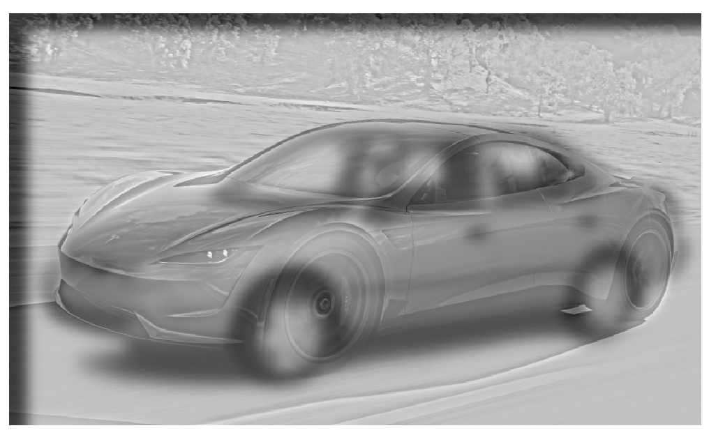
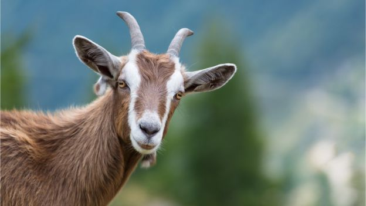
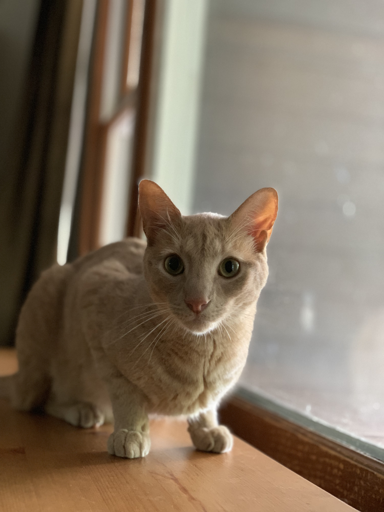
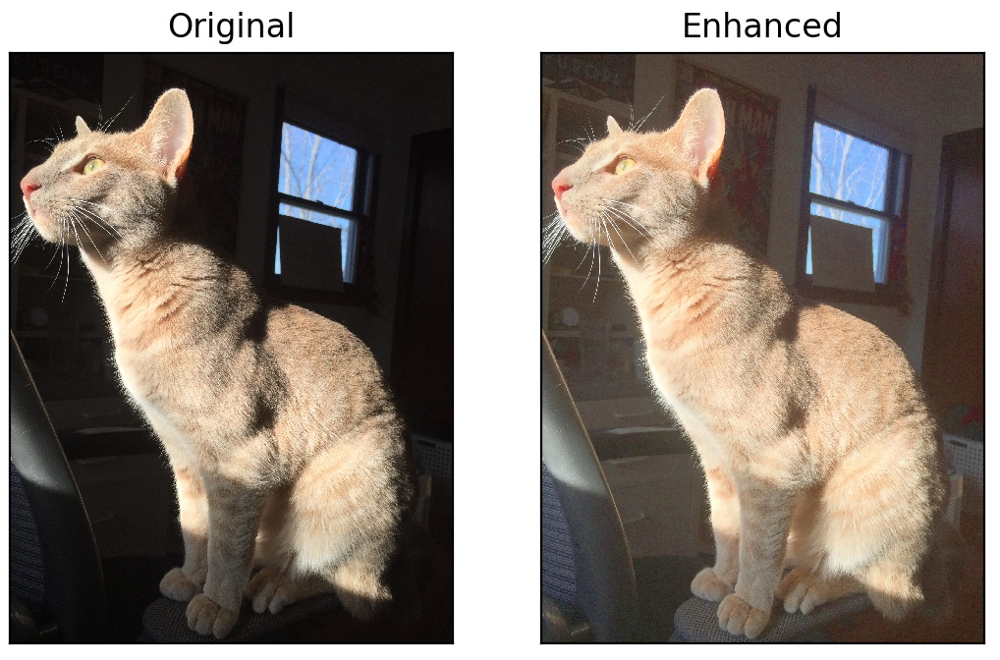
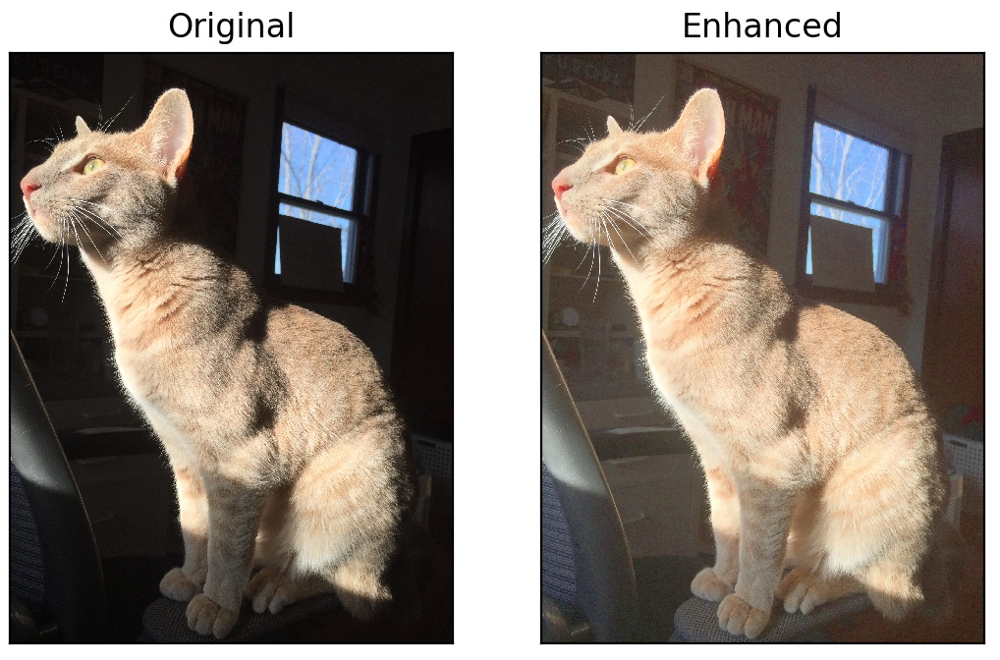
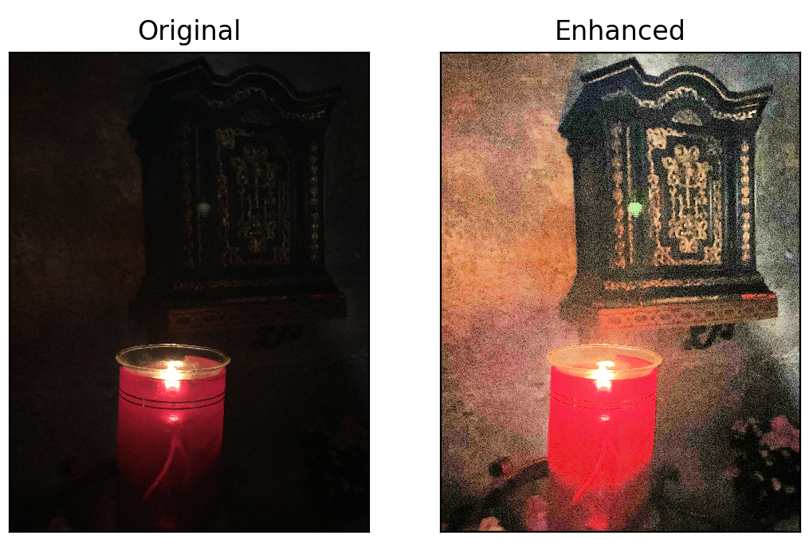
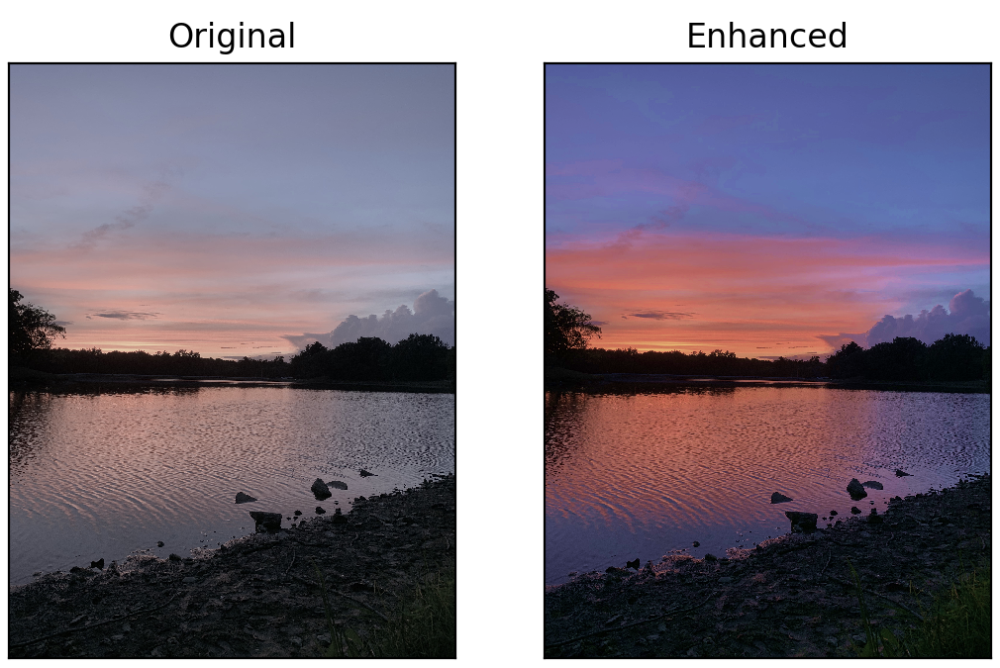

My best result was using using a Toyota Corolla as the low-frequency image and a Tesla Roadster as the high-frequency image. The Corolla is blurred with a Gaussian filter and the Roadster is sharpened with the Laplacian filter. The low-frequency Corolla and the high-frequency Roadster are merged together to create the hybrid image.

I used a cutoff value of 5 for the high and low filters

FFT plots of all images

Another successful example uses a picture of my cat lying normally as the low-frequency and my cat yawning as the high-frequency. The cutoffs are 6 for the low-frequency, and 11 for the high-frequency.


This was the first attempt at a hybrid image. It did not work very well. The images do not line up enough, so they do not merge well. The goat image also adds a noticeable line to the image at its border.
 
Using Gamma Correction yieled the most visually pleasing results. These images were created with Gamma Correction with value 0.5;
 

This image was generated using histogram equalization. The resulting image is very noisy and not very pleasing, but it shows an impressive amount of detail that was completely hidden in the original.
The image was converted into the HSV colorspace and then the saturation was increased using Gamma Correction with value of 0.5.
Shifted colors using the LAB color space. B was shifted down to decrease the amount of yellow in the picture. A was shifted up to increase the amount of red in the picture. Gamma Correction was used for the first set of images. using values 0.75 for the red image and 1.25 for the less yellow image.
I also tried shifting the colors by multiplying the A and B channels. This yielded more uniform results, but the intensities do not span the full range of color. I multipied by 0.8 and 1.2 for the A and B channels respectively.